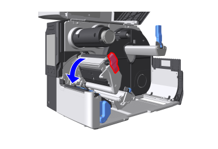

エラーメッセージ一覧
本製品にエラーが発生した場合、ディスプレイにエラーメッセージが表示されます。
原因と対処方法を確認のうえ、対処してください。
解決しない場合は、お客さまヘルプデスクにお問い合わせください。

- RFIDタグエラーが発生したRFIDタグは使用できません。エラーが発生したRFIDタグにはエラーメッセージが印字されます。
エラーメッセージ 1001（マシンエラー）
原因
本製品に異常が発生しています。
対処方法
本製品の電源を入れ直してください。
エラーメッセージ 1002（プログラムエラー）
原因
メモリ上でプログラムエラーが発生しています。
対処方法
本製品の電源を入れ直してください。
エラーメッセージ 1003（通信条件の確認（パリティエラー））
原因（1）
RS-232C設定が正しくありません。
対処方法（1）
［設定］をタップし、 本製品の通信設定を再設定してください。
RS-232C接続を設定する
原因（2）
RS-232Cケーブルが正しく接続されていません。
対処方法（2）
本製品の電源を切り、RS-232Cケーブルを正しく接続してから再度電源を入れてください。
エラーメッセージ 1004（通信条件の確認（オーバーランエラー））
原因（1）
RS-232C設定が正しくありません。
対処方法（1）
［設定］をタップし、 本製品の通信設定を再設定してください。
RS-232C接続を設定する
原因（2）
RS-232Cケーブルが正しく接続されていません。
対処方法（2）
本製品の電源を切り、RS-232Cケーブルを正しく接続してから再度電源を入れてください。
エラーメッセージ 1005（通信条件の確認（フレーミングエラー））
原因（1）
RS-232C設定が正しくありません。
対処方法（1）
［設定］をタップし、 本製品の通信設定を再設定してください。
RS-232C接続を設定する
原因（2）
RS-232Cケーブルが正しく接続されていません。
対処方法（2）
本製品の電源を切り、RS-232Cケーブルを正しく接続してから再度電源を入れてください。
エラーメッセージ 1006（送信データが多すぎます）
原因（1）
ホストから受信バッファサイズを超える量のデータを受信しました。
対処方法（1）
ホストで設定を変更して、受信バッファのサイズを超えるデータを送信しないようにしてください。
原因（2）
本製品とホスト間の通信設定が合っていません。
対処方法（2）
［設定］をタップし、本製品とホストの通信設定を再設定してください。
接続設定
プリンタドライバの設定については、『プリンタドライバ説明書』をご覧ください。
日本 https://www.sato.co.jp/support/
海外 https://www.sato-global.com/drivers/redirect.html
エラーメッセージ 1007（ヘッドが開いています）
原因
- サーマルヘッドがロックされていません。
- サーマルヘッドの開閉を検出するセンサに異常があります。
対処方法
サーマルヘッドをロックしてください。
ロックされている場合は、サーマルヘッドのロックを一度解除し、再度ロックしてください。
- ヘッドロックレバーを後方に倒します。

- ヘッドロックレバーがロックされるまで、サーマルヘッドを押し下げます。

- 印字完了直後は、サーマルヘッドとその付近が熱くなっています。火傷をしないように注意してください。
エラーメッセージ 1008（用紙がなくなりました）
原因（1）
用紙がセットされていません。
対処方法（1）
用紙をセットしてください。
用紙をセットする
原因（2）
用紙が正しくセットされていません。
対処方法（2）
用紙のセット方法を確認し、正しくセットし直してください。
用紙をセットする
原因（3）
用紙センサレベルが正しく設定されていません。
対処方法（3）
左上のをタップし、 用紙センサレベルを調整してください。
用紙センサの自動調整をおこなう
原因（4）
用紙が詰まっています。
対処方法（4）
詰まった用紙を取り除いてください。
用紙経路や、本製品内部の各部位の操作については、用紙セット時の動画をご覧ください。
ヘルプ動画の一覧
原因（5）
用紙センサが正しく動作していません。
- 用紙センサが汚れているか、ラベルが貼り付いています。
- 用紙センサの感度不良です。
対処方法（5）
用紙センサを清掃してください。
標準/カッタ使用時の清掃
エラーメッセージ 1009（リボンがなくなりました）
原因（1）
リボンがセットされていません。
対処方法（1）
リボンをセットしてください。
リボンをセットする（熱転写方式で印字する場合）
原因（2）
リボンが正しくセットされていません。
対処方法（2）
リボンや用紙のセット方法を確認し、正しくセットし直してください。
リボンをセットする（熱転写方式で印字する場合）
用紙をセットする
原因（3）
リボンが切れています。
対処方法（3）
新しいリボンをセットしてください。
リボンをセットする（熱転写方式で印字する場合）
原因（4）
リボンセンサが正しく動作していません。
- リボンセンサが汚れています。
- リボンセンサの感度不良です。
対処方法（4）
本製品の電源を入れ直してください。
エラーメッセージ 1010（印字飛びエラー）
原因（1）
印字データの用紙サイズと実際の用紙サイズが異なります。
対処方法（1）
- 印字データの用紙サイズと実際の用紙サイズを再確認してください。
- 本製品の電源を入れ直してください。
原因（2）
印字データの用紙サイズが実際の用紙サイズより長くなっています。
対処方法（2）
- 印字データを確認してください。
- 本製品の電源を入れ直してください。
原因（3）
センサレベルが正しくないため、用紙が通常より長く送られています。
対処方法（3）
- 左上のをタップし 、用紙センサレベルを調整してください。
用紙センサの自動調整をおこなう - 本製品の電源を入れ直してください。
エラーメッセージ 1012（ヘッドが断線しています）
原因
サーマルヘッドが摩耗または損傷しています。
対処方法
- 本製品の電源を入れ直してください。
- ［設定］をタップし、 ［印字］メニュー内の［詳細設定］ > ［ヘッドチェック］の設定を［バーコード］に変更し、印字できない箇所がバーコードの白線部分になるように調整してください。
サーマルヘッドの断線確認 - サーマルヘッドを交換してください。
サーマルヘッドを交換する

- 本エラー発生後に発行したラベルについては、お手持ちのスキャナなどを使って印字したバーコードを読み取って確認してください。

- 本エラーを強制的に解除して印字を再開するには、左上のを5秒間長押しし、表示されるメッセージを確認のうえ、［解除］をタップしてください。
エラーメッセージ 1013（USBメモリ読み書きエラー）
原因（1）
書込み中にUSBメモリが抜かれました。
対処方法（1）
USBメモリを挿入してください。
原因（2）
USBメモリに十分な保存領域がありません。
対処方法（2）
USBメモリに十分な保存領域があるか確認してください。
原因（3）
USBメモリへの書込みが失敗しました。
対処方法（3）
USBメモリを交換してください。
原因（4）
USBメモリがフォーマットされていません。
対処方法（4）
USBメモリをFAT32形式で フォーマットしてください。
エラーメッセージ 1015（用紙が切れませんでした）
原因（1）
カッタで用紙詰まりが発生しています。
対処方法（1）
- カッタから詰まった用紙を取り除いてください。
用紙経路や、本製品内部の各部位の操作については、用紙セット時の動画をご覧ください。
ヘルプ動画の一覧- 用紙を取り除くときは、カッタの刃でケガをしないように注意してください。
- 本製品の電源を入れ直してください。
原因（2）
カッタの刃が所定の位置に戻っていません。
対処方法（2）
- ［カッタ］ をタップし、カッタの刃を所定の位置に戻してください。
- 本製品の電源を入れ直してください。
エラーメッセージ 1017 （データが不正です）
原因
印字データ中に不正なコマンドまたはパラメータを検出しました。
エラーの詳細は「aa-bbb: cc」の形式で表示されます。
- aa：エラーコマンド名
- bbb：エラー発生箇所
- cc：エラー内容
詳しくは、コマンドエラー情報の見かたを参照してください。
対処方法
- 印字データを確認してください。
印字コマンドメニュー一覧
本製品の電源を入れ直してください。
- エラーコマンド名
エラーが発生したコマンド名は「aa」部分に表示されます。 - エラー発生箇所
- コマンドエラーの発生箇所は「bbb」部分に表示されます。
- データ送出開始指定<A>コマンドからESCコマンドの数（999まで表示）が示されています。（データ送出開始指定<A>コマンドは数に含まれません。）
例）コマンドエラーが印字横位置指定<H>コマンドで検知されたとき
------: [ESC]A
001: [ESC]V100
002: [ESC]H99999
003: [ESC]L0202
004: [ESC]M,ABCDEF
005: [ESC]Q1
006: [ESC]Z
この場合、002がエラーの発生箇所です。
- エラー内容
コマンドエラーの内容は、「cc」部分に表示されます。内容（「cc」） 原因 不正なコマンドです 不適切なコマンドが検出されました。 不正なパラメータです 不適切なパラメータを受信しました。 コマンドテーブルの読込みエラーです コマンドテーブルの読込みに失敗しました。 不正なグラフィック・外字データです 画像や外字データが不適切です。 不正な登録領域の指定です - 指定されたメモリ部（カードスロット）が不適切です。
- 書込み禁止のメディアに書き込もうとしました。
指定された番号は登録済みです 登録コマンドで指定された数字がすでに使用されています。 登録領域の上限を超えました 登録エリアを超過しています。（メモリフル） データが登録されていません フォームオーバーレイなどのデータが登録されていません。 印字位置が印字可能領域外です 指定された印字開始位置が印字領域外です。 バーコードの印字イメージが印字可能領域を超えました 印字イメージが印字領域外です。（バーコードのみ）
エラーメッセージ 1019（RFIDシステムエラー）
原因
RFIDモジュールが正しく動作していません。
対処方法
RFIDモジュールの修理または交換が必要です。お客さまヘルプデスクにお問い合わせください。
お問い合わせ先
- RFIDモジュールが正しく動作していないため、インレイへのデータの書込みや読取り操作はできませんが、タグの表面への印字は可能になります。
エラーメッセージ 1020（カレンダエラー）
原因（1）
カレンダの日付と時間が正しくありません。
対処方法（1）
カレンダを再設定してください。
［設定］をタップし、日付と時間を再設定してください。
日時の設定
原因（2）
カレンダ用電池の残量が少なくなっています。
対処方法（2）
カレンダ用電池を交換する必要があります。お客さまヘルプデスクにお問い合わせください。
お問い合わせ先
エラーメッセージ 1021（BCCが一致していません）
原因
送信データ（1アイテム分）のBCCコードが正しくありません。
対処方法
送信データと通信設定を確認してください。
- CANコマンド送信：BCCエラーが発生した印字データをキャンセルし、次のアイテムから印字を再開します。
エラーメッセージ 1022 （オーバーヒートエラー）
原因
本製品の温度が許容値を超えました。
対処方法
本製品の操作を停止し、温度が下がるまでお待ちください。
エラーメッセージ 1023（NTPエラー）
原因
タイムサーバーに接続できず、日時を設定できませんでした。
対処方法
- ［設定］をタップし 、タイムサーバーのアドレスが正しいか確認してください。
NTP機能を設定する - ［設定］をタップし 、通信設定を確認してください。
接続設定 - 通信環境を確認してください。
- ［設定］をタップすると、日時は手動で設定でき、NTP機能なしで操作を再開できます。
日時の設定
エラーメッセージ 1024（ヘッド密度変更）
原因（1）
サーマルヘッドが取り付けられていません。
対処方法（1）
サーマルヘッドを取り付けてください。
サーマルヘッドを交換する
原因（2）
解像度の異なる新しいサーマルヘッドが取り付けられています。
対処方法（2）
使用していたサーマルヘッドと同じ解像度のサーマルヘッドを取り付けてください。
サーマルヘッドを交換する
エラーメッセージ 1028 （ギャップが見つかりません）
原因（1）
用紙が曲がっています。
対処方法（1）
用紙のセット方法を確認し、正しくセットし直してください。
用紙をセットする
原因（2）
用紙センサ部にラベルが貼り付いています。
対処方法（2）
用紙センサ部を清掃してください。
標準/カッタ使用時の清掃
原因（3）
用紙センサタイプが正しくありません。
対処方法（3）
左上のをタップし、使用する用紙に合った用紙センサタイプを設定してください。
使用する用紙センサを変更する
原因（4）
用紙センサレベルが正しくありません。
対処方法（4）
左上のをタップし、用紙センサレベルを調整してください。
用紙センサの自動調整をおこなう
エラーメッセージ 1035 （アイマークが見つかりません）
原因（1）
用紙が曲がっています。
対処方法（1）
用紙のセット方法を確認し、正しくセットし直してください。
用紙をセットする
原因（2）
用紙センサ部にラベルが貼り付いています。
対処方法（2）
用紙センサ部を清掃してください。
標準/カッタ使用時の清掃
原因（3）
用紙センサタイプが正しくありません。
対処方法（3）
左上のをタップし、使用する用紙に合った用紙センサタイプを設定してください。
使用する用紙センサを変更する
原因（4）
用紙センサレベルが正しくありません。
対処方法（4）
左上のをタップし、用紙センサレベルを調整してください。
用紙センサの自動調整をおこなう
エラーメッセージ 1046 （EAP認証エラー）
原因
EAP認証が失敗しました。
対処方法
［設定］をタップし 、Wi-Fi設定を確認して再設定してください。
無線LANの接続設定を手動でおこなう
エラーメッセージ 1047（EAP認証エラー）
原因
EAP認証が失敗しました。
対処方法
アクセスポイント（AP）および認証サーバーの設定を適切におこなってください。
無線LANの接続設定を手動でおこなう
エラーメッセージ 1050 （Bluetoothモジュールエラー）
原因（1）
Bluetoothモジュールとの通信に失敗しました。
対処方法（1）
［設定］をタップし、Bluetooth設定を確認して再設定してください。
Bluetooth接続を設定する
原因（2）
Bluetoothモジュールの故障が検出されました。
対処方法（2）
Bluetoothモジュールの修理が必要です。お客さまヘルプデスクにお問い合わせください。
お問い合わせ先
エラーメッセージ 1058 （CRCチェックエラー）
原因
- CRCがデータに追加されていません。
- CRCが一致しません。
対処方法
送信データと通信設定を確認してください。
エラーメッセージ 1066（用紙詰まり）
原因（1）
用紙が詰まっています。
対処方法（1）
詰まった用紙を取り除いてください。
用紙経路や、本製品内部の各部位の操作については、用紙セット時の動画をご覧ください。
用紙をセットする
原因（2）
用紙が正しくセットされていません。
対処方法（2）
用紙のセット方法を確認し、正しくセットし直してください。用紙の先端がカッタの刃よりも手前になるようにセットしてください。
用紙をセットする
エラーメッセージ 1068（Wi-Fiエラー）
原因
無線LANモジュールが破損しています。
対処方法
- 左上のをタップし 、Wi-Fi設定を確認して再設定してください。
無線LANの接続設定を手動でおこなう - 無線LANモジュールの交換が必要です。お客さまヘルプデスクにお問い合わせください。
お問い合わせ先
エラーメッセージ 1069（オプションエラー）
原因
ハクリまたはノンセパセンサの接続情報が変更されました。
対処方法
本製品の電源を入れ直してください。
エラーメッセージ1072（電源オフエラー）
原因
本製品の電源が正しく切られていません。
対処方法
設定情報を確認してください。
エラーメッセージ 1073（RFID未検出警告）
原因
［未検出警告］が有効でRFIDタグがセットされているときに、RFIDコマンドがない印字ジョブが送信されました。
対処方法
- 印字ジョブにRFIDコマンドを追加してください。
- ［未検出警告］を［無効］に設定してください。
- 通常用紙に交換してください。
エラーメッセージ 1075（NFCエラー）
原因
NFCモジュールが正常に動作していません。
対処方法
NFCモジュールの交換が必要です。お客さまヘルプデスクにお問い合わせください。
お問い合わせ先
エラーメッセージ 1076 （NFCコマンドエラー）
原因
コマンドエラーが発生し、正常に設定が反映できませんでした。
対処方法
コマンドを確認してください。
エラーメッセージ 1077（リーダー接続エラー）
原因
- スキャナの接続が確認できませんでした。
- スキャナと本製品の通信に失敗しました。
対処方法
- スキャナを確認して、正しく接続してください。
- バーコードチェック機能を使用しない場合は、左上のをタップし、バーコードチェックモードを無効にしてください。
バーコードの読取りチェック設定
エラーメッセージ 1078（バーコード読み取りエラー）
原因
バーコードを正常に読み取れませんでした。
印字開始～印字完了+タイムアウト時間（最大2秒）の間に印字データ中のバーコード数分のバーコードが読み取られなかった場合は、本エラーが発生します。
対処方法
- 印字レイアウトを確認してください。
- スキャナの位置や設定を確認してください。
- 左上のをタップし、印字ジョブは残したまま、オフライン状態に切替えます。
エラーメッセージ 1079（バーコード読み取りエラー（チェック開始位置異常））
原因
セットした用紙の長さより大きい値がチェック開始位置に設定されています。
対処方法
- 印字レイアウトを確認してください。
- 左上のをタップし、セットした用紙の長さより小さい値をチェック開始位置に設定してください。
開始位置
- 左上のをタップすると、印字ジョブは残したまま、オフライン状態に切替えます。
エラーメッセージ 1080（バーコード照合エラー）
原因
バーコードの読取り結果が印字データと一致しません。
印字したバーコードの読取り結果と印字データ中のバーコードデータが一致しなかった場合は、照合エラーが発生します。
- 印字したバーコードの読取り結果と印字データ中のバーコードデータが一致しなかった場合でも、印字開始～印字完了+タイムアウト時間（最大2秒）の間に印字データ中のバーコード数分のバーコードが読み取られなかった場合は、エラーメッセージ1078が発生します。
対処方法
- 印字レイアウトを確認してください。
- スキャナの位置や設定を確認してください。
- 左上のをタップすると、印字ジョブは残したまま、オフライン状態に切替えます。
エラーメッセージ 1099（設定初期化）
原因
電源が入った状態で電源コードを抜くなど、不適切な方法で電源が切られました。
対処方法
- 本製品の電源を正しく切ってください。
- 左上のをタップし 、設定メニューで本製品を再設定してください。
エラーメッセージ 1111（用紙無駄なしエラー）
原因（1）
用紙のセット位置が正しくありません。
対処方法（1）
用紙の先端を用紙排出口に合わせてセットしてください。
原因（2）
用紙が正しく検出されていません。
対処方法（2）
［設定］をタップし 、［センサ自動調整］で用紙センサレベルを調整してください。
用紙センサの自動調整をおこなう
原因（3）
オフセット位置の調整値が大きすぎます。
対処方法（3）
［設定］をタップし 、［印字］ メニューの［印字調整］ > ［オフセット調整］の 調整値を変更してください。
［オフセット調整］
エラーメッセージ 1114（タグが見つかりません）
原因
タグが見つからなかったか、タグの読込みに失敗しました。
対処方法
本製品とアンテナの設定、およびインレイを確認してください。
情報の読込み/書出し設定
エラーメッセージ 1115（書込みに失敗しました）
原因
インレイの書込みに失敗しました。
対処方法
本製品とアンテナの設定、およびインレイを確認してください。
情報の読込み/書出し設定
エラーメッセージ 1116（タグの読出しに失敗しました）
原因（1）
タグデータ印字指定<TU>コマンドでタグの読込みに失敗しました。
対処方法（1）
- 本製品とアンテナの設定、およびインレイを確認してください。
情報の読込み/書出し設定 - インレイの容量を超えるアドレスを指定していないか確認してください。
原因（2）
読み出したタグの置換に失敗しました。
対処方法（2）
本製品とアンテナの設定、およびインレイを確認してください。
情報の読込み/書出し設定
エラーメッセージ 1117（書込みに失敗しました）
ISO/IEC 15693、FeliCaのみ
原因
- 書込みロック状態のインレイに書き込もうとしました。
- 書込み不可のアドレスに書き込もうとしました。
対処方法
ロックされていないタグを使用してください。
エラーメッセージ 1118（書込み読出し値の不一致）
FeliCa以外
原因
書き込んだ値と読み出した値が一致しません。
対処方法
本製品とアンテナの設定、およびインレイを確認してください。
情報の読込み/書出し設定
FeliCaのみ
原因
書き込んだ値と読み出した値が一致しません。減算レジスタに元データより大きな値が書き込まれました。
対処方法
減算レジスタへ適切な値を書き込んでください。
エラーメッセージ 1119（ロック処理に失敗しました）
原因
インレイのロックに失敗しました。
対処方法
インレイを確認してください。
エラーメッセージ 1120（不正タグのUIDを読込み）
ISO/IEC 15693、ISO/IEC14443 Type Aのみ
原因
指定タグ以外のタグのUIDを読み込みました。
対処方法
タグ種の設定どおりのタグを使用しているか確認してください。
エラーメッセージ 1121（複数のタグを捕捉しました）
FeliCa以外
原因
複数のインレイを同時に取り込みました。
対処方法
本製品とアンテナの設定、およびインレイを確認してください。
情報の読込み/書出し設定
FeliCaのみ
原因
処理間で取り込んだカードのIDmが一致しません（目的外のカードに書き込もうとしました）。
対処方法
本製品とアンテナの設定、およびインレイを確認してください。
情報の読込み/書出し設定
エラーメッセージ 1123（書込みに失敗しました）
原因（1）
書込みロック状態のインレイに書き込もうとしました。
対処方法（1）
ロックされていないタグを使用してください。
原因（2）
書込み電力不足の状態でインレイに書き込もうとしました。
対処方法（2）
［書込み電波出力］/［読出し電波出力］を調節してください。
［RFID］ > ［書込み電波出力］/［読出し電波出力］
エラーメッセージ 1124（タグ種の指定が不正です）
ISO/IEC 15693、ISO/IEC14443 Type Aのみ
原因
タグ種を間違えて指定しました。
対処方法
タグ種を確認し、正しいタグ種を指定してください。
エラーメッセージ 1125（内部エラーが発生しました）
ISO/IEC 15693、ISO/IEC14443 Type A、FeliCaのみ
原因
IDの取得に失敗しました。
対処方法
電波状態の改善が必要です。
エラーメッセージ 1126（電波出力が足りません）
原因
［RSSIフィルタ］機能を有効にして、インレイのRSSI値が［閾値］で設定した値以下になりました。
対処方法
- タグを確認してください。また、［閾値］の設定を確認してください。
- ［書込み電波出力］/［読出し電波出力］を調節してください。
［RFID］ > ［書込み電波出力］/［読出し電波出力］
エラーメッセージ1127（オートクローンエラー）
原因（1）
USBメモリが挿入されていません。
対処方法（1）
本製品のUSBコネクタ（タイプA）にUSBメモリを挿入してください。
原因（2）
USBメモリがフォーマットされていません。
対処方法（2）
［ツール］メニュー内の［USBフォーマット］でUSBメモリをフォーマットしてください。
原因（3）
USBメモリが正しく認識されていません。
対処方法（3）
USBメモリを交換してください。
エラーメッセージ1128（Bluetooth MFiチップエラー）
原因
BluetoothモジュールのMFiチップが破損しています。
対処方法
Bluetoothモジュールの交換が必要です。お客さまヘルプデスクにお問い合わせください。
お問い合わせ先
エラーメッセージ1129（未サポートタグ種です）
ISO/IEC 15693、FeliCaのみ
原因
サポートされていないタグ種、または書込み不可能なエンコード済みのタグを使用しています。
対処方法
インレイの製造元と型式を確認してください。
エラーメッセージ 1131（アドレスが超過しています）
ISO/IEC 15693のみ
原因
- 範囲を超えるアドレスのメモリに書き込もうとしました。
- 書込み先のメモリブロックのアドレスにメモリが存在しません。
対処方法
- インレイの容量を超えるアドレスを指定していないか確認してください。
- データサイズを確認してください。
エラーメッセージ1132（RTCモジュールチップエラー）
原因
RTCモジュールまたは本製品のRTCモジュール接続ポートが破損しています。
対処方法
RTCモジュールまたは本製品の部品の交換が必要です。お客さまヘルプデスクにお問い合わせください。
お問い合わせ先
エラーメッセージ1134（RFIDオーバーヒートエラー）
原因
RFIDモジュールの温度が許容値を超えました。
対処方法
本製品の操作を停止し、温度が下がるまで15分お待ちください。
エラーメッセージ1142（ホスト受信エラー）
原因
ホスト側が受信に失敗しました。
対処方法
本製品の電源を切り、ホスト側の受信設定を確認してください。
エラーメッセージ1147（EXTコネクタショート）
原因
EXTコネクタの接続部がショートしています。
EXTコネクタに接続されている外部機器に異常があります。
対処方法
本製品の電源を切り、EXTコネクタの接続状態を確認してください。
別の外部機器を接続してください。
エラーメッセージ1148（カッタコネクタショート）
原因
カッタユニットの電源コネクタ接続部がショートしています。
対処方法
本製品の電源を切り、カッタユニットの接続状態を確認してください。
カッタユニットを交換してください。
エラーメッセージ1151（サーマルヘッドエラー）
原因
サーマルヘッドが正しく取り付けられていません。
対処方法
本製品の電源を切り、サーマルヘッドを正しく取り付けてください。
サーマルヘッドを交換する
エラーメッセージ1152（USB過電流エラー）
原因
USBポートの過電流が検知されました。
対処方法
本製品の電源を切り、USB接続を解除し、接続し直してください。
エラーメッセージ1153（RFID印字設定エラー）
原因
RFIDの印字が実行できない印字設定になっています。
対処方法
［設定］をタップし、印字設定およびRFIDの設定を変更してください。
エラーメッセージ1154（NFC書き込みエラー）
原因
NFCを用いたハンドオーバー情報の書込みに失敗しました。
対処方法
本製品の電源を入れ直し、再度NFCを用いたハンドオーバー情報の書込みを実施してください。解決しない場合は、NFCタグまたはNFCモジュールを交換してください。